Code
library(popdemo)
library(tidyverse)
library(cowplot)Autores: “Mariana Hernández Apolinar y Paola Portillo Tzompa”
library(popdemo)
library(tidyverse)
library(cowplot)La elasticidad no lineal (Hodgson & Townley, 2004) se refiere a que los análisis de elasticidad (Caswell, 1989; De Kroon, Van Groenendael & Ehrlén, 2000) como explicado en el capitulo xx no son estrictamente lineal y que las perturbaciones en una población pueden tener efectos no lineales en las respuestas de los parámetros de densidad o indices de crecimientos (Bialic-Murphy, Gaoue & Knight, 2018). Se asume el capitulo de “Elasticidad” que el efecto de un cambio en los parámetros de la matriz tenga un efecto lineal sobre \(\lambda\), por consecuencia los análisis de elasticidad tradicional se pueden aplicar cuando los cambios en la matriz son pequeñas. Cambios más grande pueden resultar en efectos no lineales, y por consecuencia analisis de elasticticidad pueden ser suboptimal cuando la magnitud de las perturbaciones sean más grande (Bialic-Murphy, Gaoue & Knight, 2018). Si las perturbaciones son pequeñas el uso de análisis de elasticidad pudiesen ser aceptable, por consecuencia los efectos no lineales pueden ser ignorados, pero si las perturbaciones son grandes, los efectos no lineales pueden ser importantes y impactar los procesos de dinámica poblacionales. En los análisis de dinámica poblacional estamos interesado a no solamente el crecimiento de la población pero que pudiese pasar si hubiese cambios pequeños y grandes en los parámetros de la matriz sobre los indices de crecimiento y densidad poblacional tal como la supervivencia, crecimiento y fecundidad. La elasticidad no lineal es una herramienta que permite evaluar esos cambios que sean por causa naturales tal como variación ambientales (sucesión, deslizamiento de terreno, mortandad de forófito, cambio climatológico), o antropogénicos (extracción de individuos o hasta manejo del sitio para promover el crecimiento de la población). Es importante reconocer que los análisis de elasticidad y sensitividad ignoran los efectos de la dinámica de transiciones y provee una aproximación linear de cambios que muchas veces no son lineales (Stott, Hodgson & Townley, 2012).
La elasticidad no lineal es una herramienta que permite evaluar esos cambios que sean por causa naturales tal como variación ambientales (sucesión, deslizamiento de terreno, mortandad de forófito, cambio climatológico), o antropogénicos (extracción de individuos o hasta manejo del sitio para promover el crecimiento de la población).
El método que presentamos aquí es el desarrollado por Hodgson y Townley (2004) (Hodgson & Townley, 2004; Stott, Hodgson & Townley, 2012), los cuales presentan un método para calcular la elasticidad no lineal. No se discutirá en detalle el método, pero se presentará un ejemplo de como calcular la elasticidad no lineal.
Para describir de un poco la metodología del método de elasticidad no lineal, se debe considerar que la matriz de proyección poblacional \(A\) es una matriz de transición que describe el ciclo de vida de una población donde los elementos es perturbado por una magnitud \(\delta\) determinado por los vectores \(d\) y \(e\). donde \(e^T\) representa \(e\) transposed por una columna a un vector de fila. Cuando \(d*e^T\) son multiplicado forma una matriz para determinar cual de los elementos vitales son perturbado. Nota que el acercamiento usado es bien conocido en la literatura de control sistemas.
\[A_{\delta}=\ A\ +\ \delta de^T\] Tanto como \(A\) tiene una propriedades emergentes tal como el crecimiento asimptótico, \(\lambda_{max}\) y el eigenvector derecho \(v\) y el eigenvector izquierdo \(w\) que son asociados con \(\lambda_{max}\), \(A_{\delta}\) también tiene propriedades emergentes tal como el crecimiento asimptotico, su estructura estable de estadios y valores reproductivos. El valor de \(\delta\) representa los valores continuos de perturbaciones que corresponde a los cambios en los elementos de la matriz \(\lambda_{max}(A_\delta)\). La relación exacta entre \(\delta\) y \(\lambda_{max}\) se describe
\[\delta^{-1}=e^T\left(\lambda I-A\right)^{-1}d\] donde \(I\) es la matriz identidad de la misma dimensión de \(A\). Esta es la ecuación de las elasticidades no lineal. Vea el trabajo de Stott et al. (2012) (Stott, Hodgson & Townley, 2012) para una discusión más detallada y pruebas de la metodología.
Para entender el método de elasticidad no lineal, usaremos un ejemplo de Lepanthes rupripetala. Los datos provienen de (Tremblay, Raventos & Ackerman, 2015), donde se evaluó la ventaja de usar el método que sigue para tener una mejor apreciación de la dinámica de la especie. En este caso, la matriz describe las transiciones entre plántula (PL), juvenil (J), no reproductivo (NR) y adulto reproductivo (AR).
Aquícapturamos la matriz de Lefkovitch para la planta Lepanthes rubripetala.
#Capturar los datos de la matriz para L. rubripetala (Tremblay et al. 2015)
Lr1 <- matrix(c(0.4324, 0, 0, 0.15,
0.3784, 0.8459, 0, 0,
0, 0.0034, 0.7954,0.2300,
0, 0.0890, 0.1841,0.7510), byrow=TRUE,ncol=4)
#Capturar las categorias de estado
estadios <- c("PL", "J", "NR", "AR")
colnames(Lr1) <- rownames(Lr1) <- estadios
#Obtener la matriz L. rubripetala
Lr1 <- matrix(Lr1[1:4, ], nrow = 4, dimnames = list(estadios, estadios))
Lr1 PL J NR AR
PL 0.4324 0.0000 0.0000 0.150
J 0.3784 0.8459 0.0000 0.000
NR 0.0000 0.0034 0.7954 0.230
AR 0.0000 0.0890 0.1841 0.751Aquí la matriz de elasticidad calculado anteriormente.
Nota que la suma de todos los elementos de la matriz de elasticidad es uno. Proporcionalmente el cambio de la supervivencia del estado de Adulto Reproductivo (AR) tiene el mayor impacto sobre la tasa de crecimiento poblacional. Un pequeño cambio resultaría en un cambio de 0.311 en la tasa de crecimiento poblacional. Al contrario una plántula que se queda plántula (estasis) tuviese muy poco impacto en el crecimiento de la población (0.018). Esos cambios son lineales y son validos si las perturbaciones son pequeñas. Recordar que los indices de sensitividad para transiciones y estasis son en unidades diferentes que los fecundidades.
# Matriz de elasticidad
elasticidad<- round(elas(Lr1), digit = 3)
elasticidad PL J NR AR
PL 0.018 0.000 0.000 0.023
J 0.023 0.122 0.000 0.000
NR 0.000 0.001 0.313 0.083
AR 0.000 0.023 0.083 0.311En el paquete de R popdemo se puede calcular la elasticidad no lineal transfer function con la función tfam_lambda. La función tfam_lambda calcula la elasticidad no lineal de la matriz de edad o de etapas de cada elemento de la matriz A que no sean 0 (zero) con respeto al cambio en \(\lambda\). Esa función es practica para visualizar como las perturbaciones en las transiciones del ciclo de vida impacto \(\lambda\) y observar la no-linealidad de los efectos.
La función tfam_lambda calcula la elasticidad no lineal de la matriz de edad o de etapas de cada elemento de la matriz A que no sean 0 (zero) con respeto al cambio en \(\lambda\).
Por cada elemento en la matriz se genera un gráfico en la misma posición de la matriz matA. Donde no hay valores de transiciones, estasis o fecundidad no hay presentación de efecto de funciones de transferencia. En esta población de Lepanthes rupripetala hay 10 gráficos, de las 10 transiciones, estasis o fecundidad, 9 tienen un efecto no lineal sobre lambda. Nota primero que el rango de los ejes de “x” (efecto de perturbaciones) y la “y” el crecimiento poblacional intrínsico varia por cada gráfico. La transición de plántula a plántula tiene efecto no lineal sobre lambda bastante pronunciado (primer cuadro a la izquierda primera fila). Se observa que aumentar la proporción de individuos que se quedan en esta etapa no tiene mucho efecto hasta que la perturbación aumenta de ± 0.5, y después el efecto es bastante consistente.
El efecto de perturbación de la transición de juvenil a no reproductivo tiene un efecto casi lineal sobre lambda. La transición de juvenil a adulto reproductivo tiene un efecto no lineal sobre lambda. La transición de no reproductivo a adulto reproductivo tiene un efecto no lineal.
n0 <- c(0, 46, 38, 82)
tfmat_lamb=tfam_lambda(Lr1)
plot(tfmat_lamb)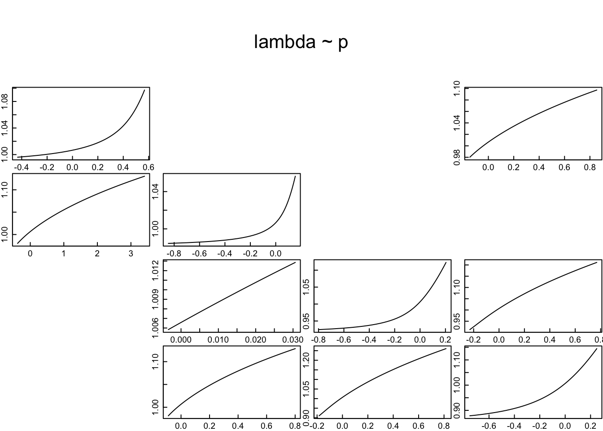
La función tfam_inertia calcula cuan grande o pequeña una población que no este a su equilibro estable puede ser perturbada por consecuencia de dinámica de transiciones al comparar con una población estable equivalente. Stott y colegas (Stott, Hodgson & Townley, 2012) presentan no solamente que el efecto de perturbaciones no es lineal sobre el cambio en lambda pero también sobre la inercia, entonces el efecto que tiene sobre poblaciones que no estén a su equilibrio estable. Cuando una población esta en estado de equilibrio estable se predice que el crecimiento o reducción poblacional sigue una razón de geométrica constante y que la estructura de la población no cambia. Cuando una población no esta en equilibrio estable, el crecimiento poblacional puede ser variable y la estructura de la población puede cambiar.
Usamos la misma terminología de Stott (Stott, Hodgson & Townley, 2012) para calcular el efecto de elasticidad sobre la inercia de la matriz de L. rubripetala. Se evalúa el efecto del basado en la estructura del vector de estado inicial. En otra palabra si la cantidad de individuos se encuentra en un estado específico. El “upper” seria los individuos en la etapa mayor (en este caso los adultos reproductivos), el “lower” en la etapa menor (en las plántulas) y una estructura de población en al inicio del estudio.
Para evaluar el efecto de no lineal de la inercia poblacional, se usa la función tfa_inertia. Esta función calcula la inercia poblacional de una matriz de proyección poblacional y un vector de estado inicial. En la secuencia de análisis que sigue se evalúa el efecto de perturbaciones de cada una de la transiciones, estasis y fecundidades de la matriz de proyección poblacional.
Nota que los vectores e y d son los vectores de perturbación que representan la transición de un estado a otro. En este caso, el vector d representa el estado inicial y el vector e representa el estado final. Por ejemplo, si se quiere evaluar el efecto de la transición de plántula a plántula, se usa d = c(1, 0, 0, 0) y e = c(1, 0, 0, 0), o si quiere el efecto de adultos reproductivos sobre no reproductivos se usa d = c(0, 0, 0, 1) y e = c(0, 0, 1, 0).
n0 <- c(0, 46, 38, 82)
tf2<-tfa_inertia(Lr1, vector=n0, d=c(0,0,0,1), e=c(0,0,1,0), prange=seq(-0.18,0.02,0.01)) # el efecto de perturbación de la transición de no reproductivo a adulto reproductivo
plot(tf2,ylim=c(0, 2), main="Inercia poblacional",cex.axis=1.4,cex.lab=1.5) # gráfica de la inercia poblacional
inertia<-inertia(Lr1, vector=n0)
sens2<-tfs_inertia(Lr1, vector=n0, d=c(0,0,0,1), e=c(0,0,1,0), tolerance=1e-5) # el efecto de sensitividad de la inercia poblacional
abline(inertia, sens2, lty=2, col="red") # Para añadir el efecto lineal 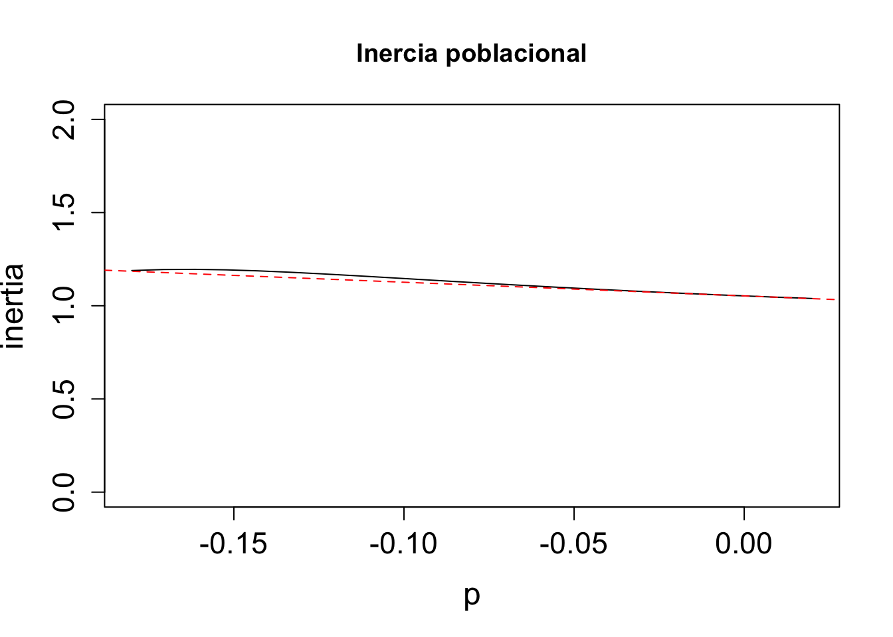
Hay algunas funciones de transferencia que son establecido en los scripts.
En el siguiente ejemplo se evalúa la inercia poblacional de la matriz de L. rubripetala cuando todos los individuos están en el último estadio (adultos reproductivos), cuando todos los individuos están en el primer estadio (plántulas) y cuando los individuos están en la estructura de población inicial.
tfmatU=tfam_inertia(Lr1, bound = "upper") # donde todos los individuos están en el ultimo estadio
plot(tfmatU, cex.axis=1.4, cex.lab=1.5) # gráfica de la inercia poblacional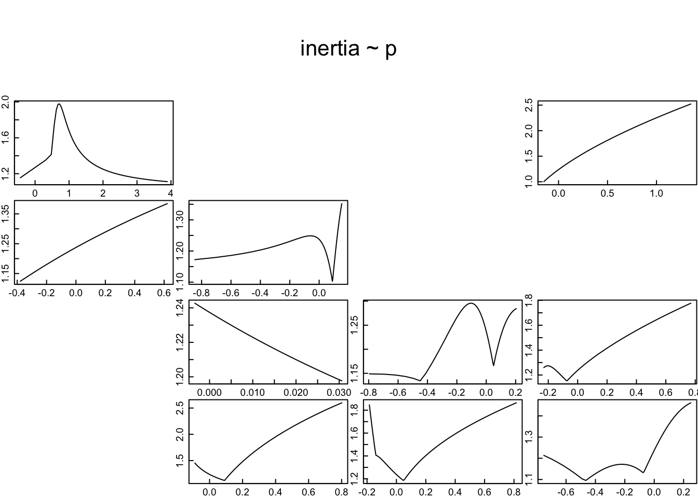
La inercia poblacional es el límite más alto en el crecimiento de la población antes de alcanzar la tasa constante de crecimiento poblacional. En este caso, la inercia poblacional es de 1.5, lo que significa que la población puede crecer hasta un 50% antes de alcanzar la tasa constante de crecimiento poblacional.
n0 <- c(0, 46, 38, 82)
stable <- popbio::stable.stage(Lr1) # calcular el estado estable de la matriz Lr1
tfmat_I=tfam_inertia(Lr1, vector = stable) # donde los individuos están en la estructura de población inicial
tfmatL=tfam_inertia(Lr1, bound = "lower") # donde todos los individuos están en el primer estadio
plot(tfmat_I)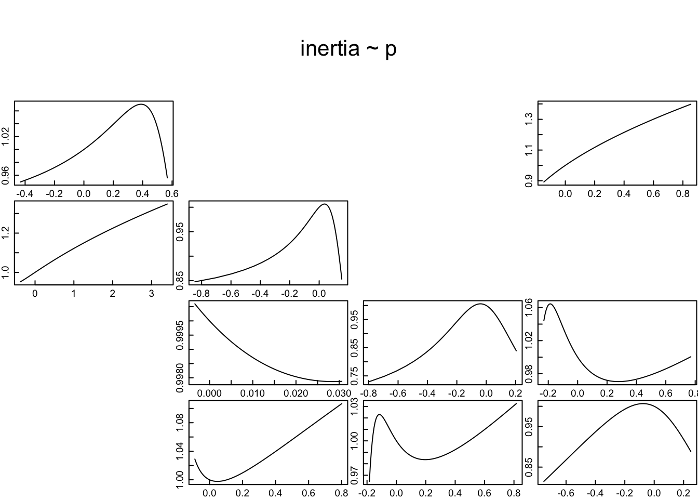
La inercia poblacional es el límite más bajo en el crecimiento de la población antes de alcanzar la tasa constante de crecimiento poblacional. En este caso, la inercia poblacional es de 0.5, lo que significa que la población puede decrecer hasta un 50% antes de alcanzar la tasa constante de crecimiento poblacional.
tfmatL=tfam_inertia(Lr1, bound = "lower") # donde todos los individuos están en el primer estadio
plot(tfmatL)
El efecto de perturbación basado sobre la inercia de las estadios cambia mucho si la población esta dominado por individuos en el primer estadio o el último estadio. En el caso de la inercia poblacional, el efecto de perturbación es más grande cuando la población esta dominado por individuos en el último estadio (adultos reproductivos) que cuando la población esta dominado por individuos en el primer estadio (plántulas). Esto se debe a que los adultos reproductivos tienen un mayor impacto sobre la tasa de crecimiento poblacional que las plántulas.
En la siguiente sección se presentan las funciones de transferencia para evaluar el efecto de perturbaciones en la matriz de proyección poblacional de Lepanthes rupripetala para cada una de la 10 transiciones, estasis y reproducción sobre \(\lambda\).
Reiteramos que la perturbación de la estructura está determinada por dos vectores d y e. El vector d representa el estado inicial y el vector e representa el estado final. Por ejemplo, si se quiere evaluar el efecto de la transición de plántula a plántula, se usa d = c(1, 0, 0, 0) y e = c(1, 0, 0, 0). Note aquí que la linea de abline es la línea de regresión que representa el efecto lineal de la perturbación sobre la tasa de crecimiento poblacional \(\lambda\). La pendiente de la línea de regresión es la sensibilidad de la perturbación sobre la tasa de crecimiento poblacional \(\lambda\). Es muy claro que
nLr0 <- c(0, 46, 38, 82)
#PERTURBACIÓN DEL VECTOR ORIGINAL
#1) Entrada de la matriz a(1,1): plántulas a plántulas
tf1 <- tfa_lambda(Lr1, d = c(1, 0, 0, 0),
e = c(1, 0, 0, 0),
prange = seq(0, 4, 0.01))
#Gráfica de la dinámica poblacional
plot(tf1, ann = FALSE)
title(main = "Dinámica poblacional (Plántulas - Plántulas)", ylab = "Lambda", xlab = "p")
#Cálculo de lambda-max:
lambda1 <- Re(eigen(Lr1)$values[1])
#Cálculo de la sensibilidad
sens1 <- tfs_lambda(Lr1, d = c(1, 0, 0, 0), e = c(1, 0, 0, 0))
#Agregar la línea, especificando el intercepto y la pendiente
abline(lambda1, sens1, lty = 2, col = "red")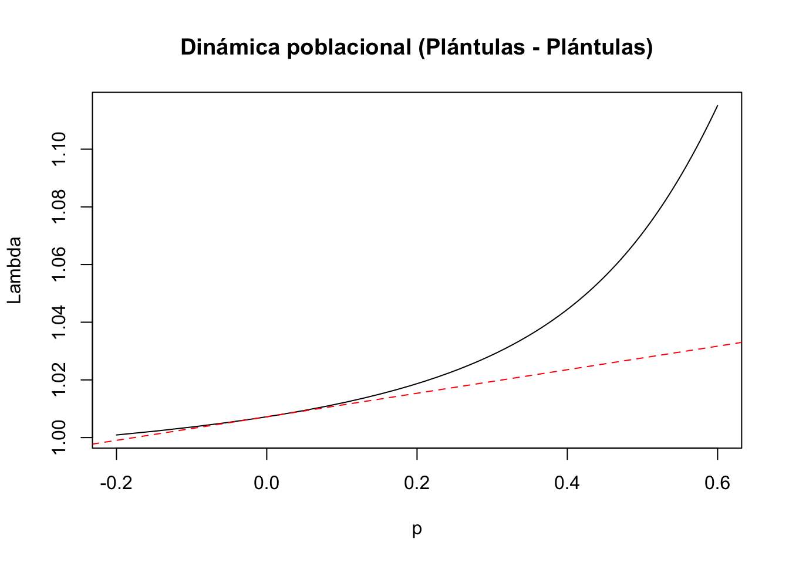
Perturbación de la transición de plántula a juvenil tiene un efecto no lineal sobre lambda, pero esta no linealidad se observa si la perturbaciones son bastante grande. Se observa que aumentar la perturbación es casi no tiene efecto sobre lambda hasta una perturbación de .10 donde el efecto es grande.
#2) Entrada de la matriz a(2,1): plántulas y juveniles
tf2 <- tfa_lambda(Lr1, d = c(1, 0, 0, 0),
e = c(0, 1, 0, 0),
prange = seq(-0.4, 0.6, 0.01))
#Gráfica de la dinámica poblacional
plot(tf2, ann = FALSE)
title(main = "Dinámica poblacional (Plántulas - Juveniles)", ylab = "Lambda", xlab = "p")
#Cálculo de lambda-max:
lambda2 <- Re(eigen(Lr1)$values[1])
#Cálculo de la sensibilidad
sens2 <- tfs_lambda(Lr1, d = c(1, 0, 0, 0),
e = c(0, 1, 0, 0))
#Agregar la línea, especificando el intercepto y la pendiente
abline(lambda2, sens2, lty = 2, col = "red")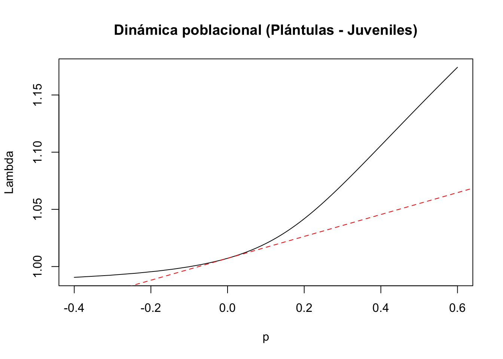
El efecto de perturbaciones de la transición de juvenil a juvenil tiene un efecto no lineal sobre lambda, el efecto lineal se observa si la perturbaciones son muy pequeñas y en un rango bien limitado (0.05 a 0.0). Se observa que aumentar la proporción de individuos que se quedan en esta etapa no tiene mucho efecto hasta que la perturbación aumenta de -0.2, y después el efecto es drástico y una pequeña perturbación resulta en un efecto grande en \(\lambda\), ya que la respuesta parece logarítmica.
#3) Entrada de la matriz a(2,2): juveniles y juveniles
tf3 <- tfa_lambda(Lr1, d = c(0, 1, 0, 0),
e = c(0, 1, 0, 0),
prange = seq(-0.8, 0.1, 0.001))
#Gráfica de la dinámica poblacional
plot(tf3, ann = FALSE)
title(main = "Dinámica poblacional (Juveniles - Juveniles)", ylab = "Lambda", xlab = "p")
#Cálculo de lambda-max:
lambda3 <- Re(eigen(Lr1)$values[1])
#Cálculo de la sensibilidad
sens3 <- tfs_lambda(Lr1, d = c(0, 1, 0, 0),
e = c(0, 1, 0, 0))
#Agregar la línea, especificando el intercepto y la pendiente
abline(lambda3, sens3, lty = 2, col = "red")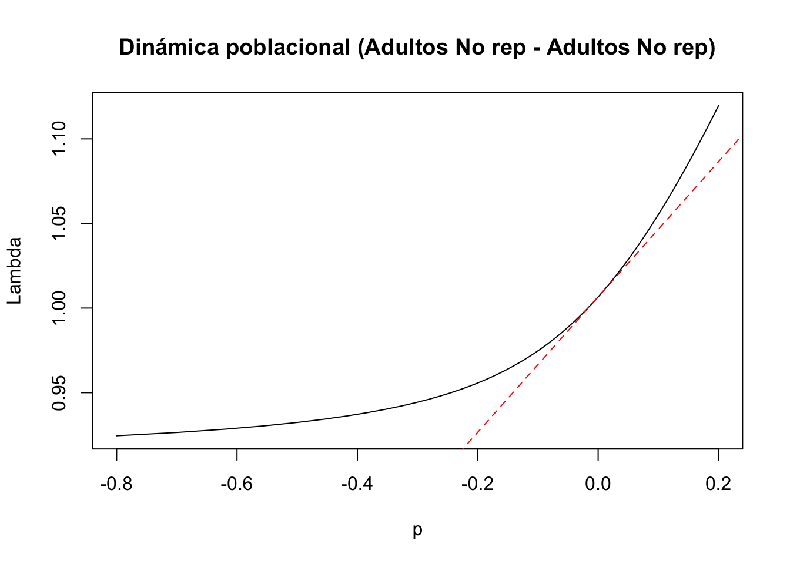
El efecto de perturbaciones de juvenil a no reproductivo casi es lineal por todo el rango.
#4) Entrada de la matriz a(3,2): juveniles y no reproductivos
tf4 <- tfa_lambda(Lr1, d = c(0, 1, 0, 0),
e = c(0, 0, 1, 0),
prange = seq(-0.001, 0.03, 0.01))
#Gráfica de la dinámica poblacional
plot(tf4, ann = FALSE)
title(main = "Dinámica poblacional (Juveniles - No reproductivos)", ylab = "Lambda", xlab = "p")
#Cálculo de lambda-max:
lambda4 <- Re(eigen(Lr1)$values[1])
#Cálculo de la sensibilidad
sens4 <- tfs_lambda(Lr1, d = c(0, 1, 0, 0),
e = c(0, 0, 1, 0))
#Agregar la línea, especificando el intercepto y la pendiente
abline(lambda4, sens4, lty = 2, col = "red")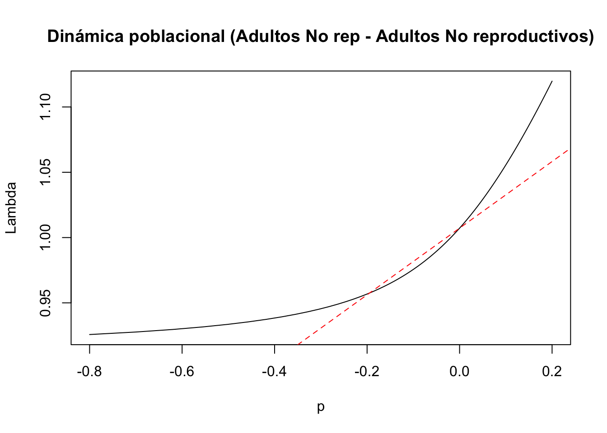
El efecto de perturbación de juvenil a adulto tiene un efecto no lineal sobre lambda, pero esta no linealidad se observa y es más pronunciada si la perturbaciones son bastante grande. Se observa que aumentar la pertubación casi no tiene efecto sobre \(\lambda\) hasta una perturbación de 0.2 donde el efecto es más pronunciado.
#5) Entrada de la matriz a(4,2): juveniles a adultos
tf5 <- tfa_lambda(Lr1, d = c(0,1,0,0),
e = c(0,0,0,1),
prange = seq(0,0.8,0.01))
#Gráfica de la dinámica poblacional
plot(tf5, ann = FALSE)
title(main = "Dinámica poblacional (Juveniles - Adultos)", ylab = "Lambda", xlab = "p")
#Cálculo de lambda-max:
lambda5 <- Re(eigen(Lr1)$values[1])
#Cálculo de la sensibilidad
sens5 <- tfs_lambda(Lr1, d = c(0, 1, 0, 0),
e = c(0, 0, 0, 1))
#Agregar la línea, especificando el intercepto y la pendiente
abline(lambda5, sens5, lty = 2, col = "red")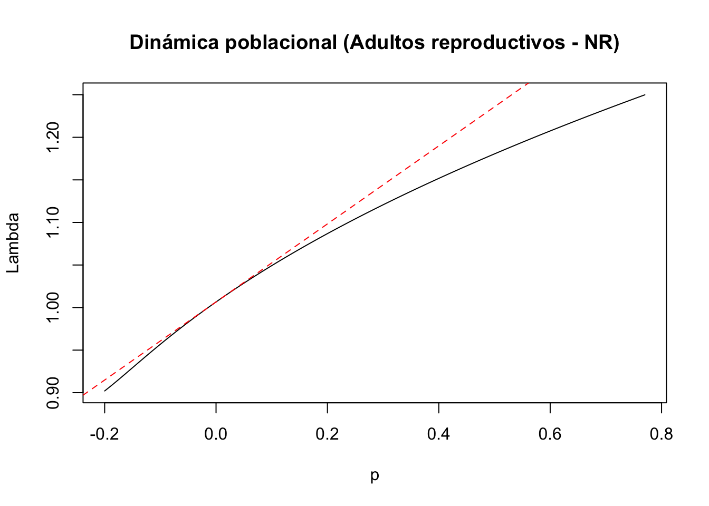
La perturbación de la transición de no reproductivo a no reproductivo tiene un efecto no lineal sobre lambda, y sumamente drástico. Un cambio menor en perturbación resulta en un cambio drástico en el crecimiento de la porblación.
#6) Entrada de la matriz a(3,3): adultos no reproductivos a adultos no reproductivos
tf6 <- tfa_lambda(Lr1, d = c(0, 0, 1, 0),
e = c(0, 0, 1, 0),
prange = seq(-0.8, 0.2, 0.01))
#Gráfica de la dinámica poblacional
plot(tf6, ann = FALSE)
title(main = "Dinámica poblacional (Adultos No rep - Adultos No rep)", ylab = "Lambda", xlab = "p")
#Cálculo de lambda-max:
lambda6 <- Re(eigen(Lr1)$values[1])
#Cálculo de la sensibilidad
sens6 <- tfs_lambda(Lr1, d = c(0,0,1,0),
e = c(0,0,1,0))
#Agregar la línea, especificando el intercepto y la pendiente
abline(lambda6, sens6, lty = 2, col = "red")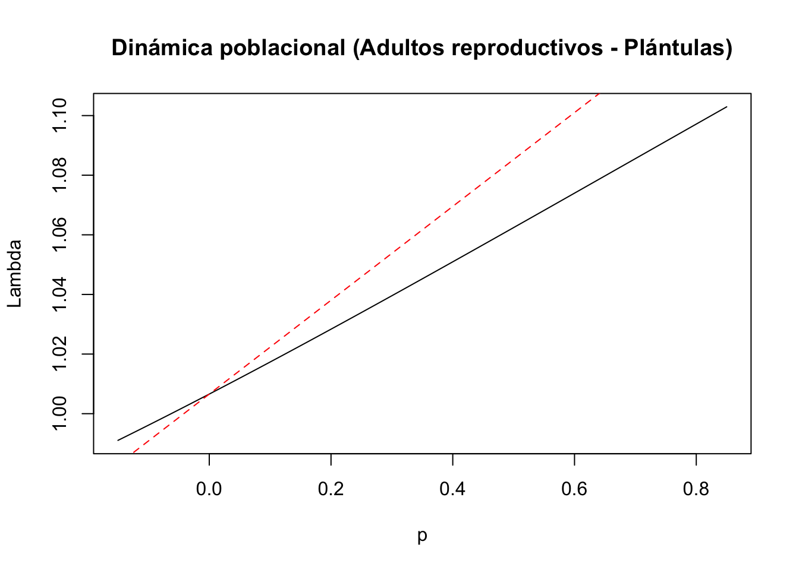
#7) Entrada de la matriz a(4,3): adultos no reproductivos a adultos reproductivosEl efecto de perturbación de adultos no reproductivos a adultos reproductivos tiene un efecto casi lineal cuando las perturbaciones son pequeñas, pero demuestra un efecto no lineal sobre lambda cuando las perturbaciones son grandes.
tf7 <- tfa_lambda(Lr1, d = c(0,0,1,0),
e = c(0,0,0,1),
prange = seq(-0.2,0.8,0.001))
#Gráfica de la dinámica poblacional
plot(tf7, ann = FALSE)
title(main = "Dinámica poblacional (Adultos No rep - Adultos rep)", ylab = "Lambda", xlab = "p")
#Cálculo de lambda-max:
lambda7 <- Re(eigen(Lr1)$values[1])
#Cálculo de la sensibilidad
sens7 <- tfs_lambda(Lr1, d = c(0,0,1,0),
e = c(0,0,0,1))
#Agregar la línea, especificando el intercepto y la pendiente
abline(lambda7, sens7, lty = 2, col = "red")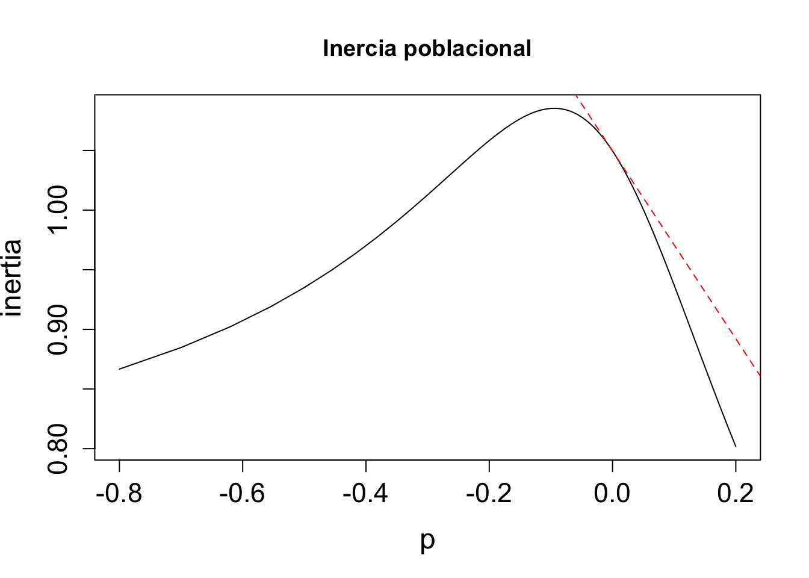
El efecto de reproducción de adultos reproductivos a plántulas tiene un efecto lineal sobre lambda, pero la pendiente es bien distinta de la de sensitividad.
#8) Entrada de la matriz a(1,4): adultos reproductivos a plántulas
tf8 <- tfa_lambda(Lr1, d = c(0,0,0,1),
e = c(1,0,0,0),
prange = seq(-0.2,0.8,0.001))
#Gráfica de la dinámica poblacional
plot(tf8, ann = FALSE)
title(main = "Dinámica poblacional (Adultos reproductivos - Plántulas)", ylab = "Lambda", xlab = "p")
#Cálculo de lambda-max:
lambda8 <- Re(eigen(Lr1)$values[1])
#Cálculo de la sensibilidad
sens8 <- tfs_lambda(Lr1, d = c(1,0,0,0),
e = c(0,0,0,1))
#Agregar la línea, especificando el intercepto y la pendiente
abline(lambda8, sens8, lty = 2, col = "red")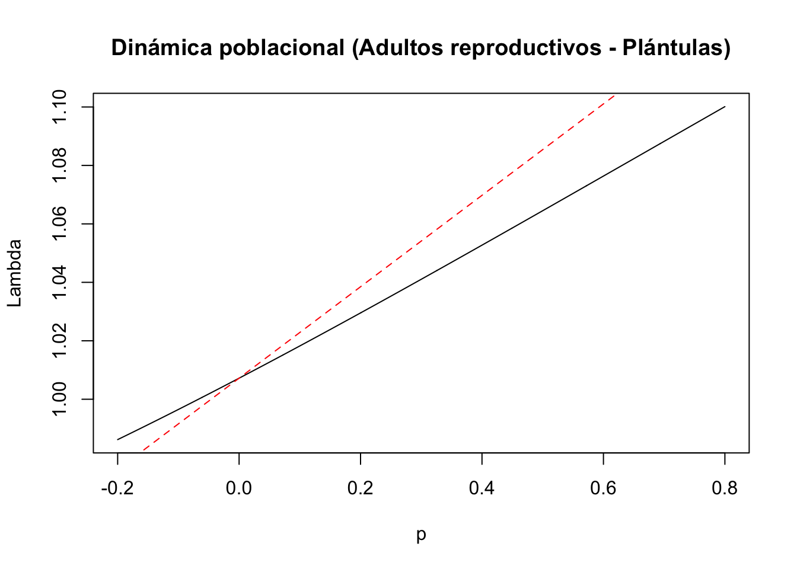
El efecto de perturbación de adultos reproductivos a no reproductivos tiene un efecto no lineal sobre lambda, pero no cambia mucho cuando las perturbaciones son pequeñas.
#9) Entrada de la matriz a(3,4): adultos reproductivos a NR
tf9 <- tfa_lambda(Lr1, d = c(0, 0, 0, 1),
e = c(0, 0, 1, 0),
prange = seq(-0.2, 0.8, 0.001))
#Gráfica de la dinámica poblacional
plot(tf9, ann = FALSE)
title(main = "Dinámica poblacional (Adultos reproductivos - NR)", ylab = "Lambda", xlab = "p")
#Cálculo de lambda-max:
lambda9 <- Re(eigen(Lr1)$values[1])
#Cálculo de la sensibilidad
sens9 <- tfs_lambda(Lr1, d = c(0, 0, 0, 1),
e = c(0, 0, 1, 0))
#Agregar la línea, especificando el intercepto y la pendiente
abline(lambda9, sens9, lty = 2, col = "red")La perturbaciones de adultos reproductivos a adultos reproductivos tiene un efecto no lineal sobre lambda. Nota que a aumentar la supervivencia de adultos reproductivos resulta positivo en el \(\lambda\).
#10) Entrada de la matriz a(4,4): adultos reproductivos a adultos reproductivos
tf10 <- tfa_lambda(Lr1, d = c(0, 0, 0, 1),
e = c(0, 0, 0, 1),
prange = seq(-0.7, 0.22, 0.001))
#Gráfica de la dinámica poblacional
plot(tf10, ann = FALSE)
title(main = "Dinámica poblacional (Adultos rep - Adultos rep)", ylab = "Lambda", xlab = "p")
#Cálculo de lambda-max:
lambda10 <- Re(eigen(Lr1)$values[1])
#Cálculo de la sensibilidad
sens10 <- tfs_lambda(Lr1, d = c(0,0,0,1),
e = c(0,0,0,1))
#Agregar la línea, especificando el intercepto y la pendiente
abline(lambda10, sens10, lty = 2, col = "red")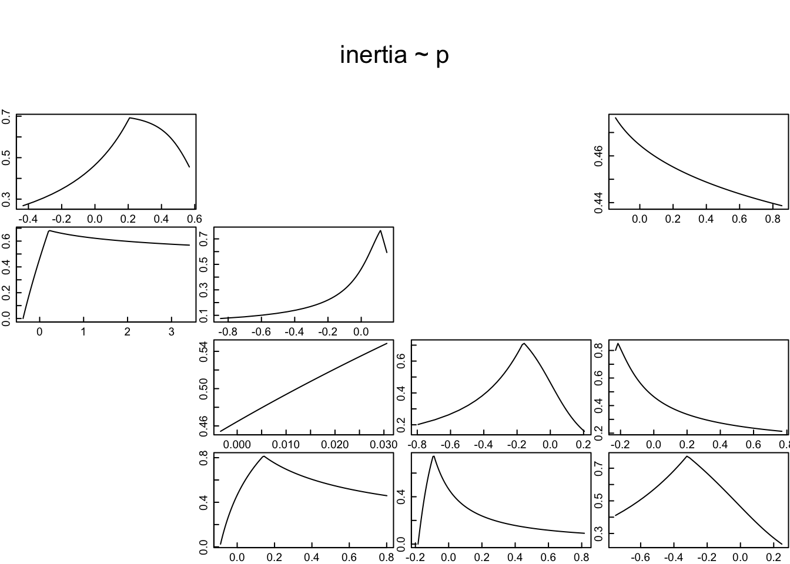
En esta sección se desarrolla las funciones para crear un gráfico con ggplot2. Este sección es solamente de utilidad si quiere publicar la visualización de análisis de la funciones de transferencia en un artículo científico o una presentación.
tf1df=as.data.frame(tf1)
tf1tf=ggplot2::ggplot() +
ggplot2::geom_line(data = tf1df, aes(x = p, y = lambda), color = "blue") +
ggplot2::geom_abline(slope = sens1, intercept = lambda1, linetype = "dashed", color = "red") +
#ggplot2::labs(title = "P - P", x = "p", y = "Lambda") +
ggplot2::theme_minimal()+
ylab("")+xlab("")+
theme(axis.text.x = element_text(angle = 45, size=6),
axis.text.y = element_text(size=6))
tf2df=as.data.frame(tf2)
tf2tf=ggplot2::ggplot() +
ggplot2::geom_line(data = tf2df, aes(x = p, y = lambda), color = "blue") +
ggplot2::geom_abline(slope = sens2, intercept = lambda2, linetype = "dashed", color = "red") +
# ggplot2::labs(title = "P - J", x = "p", y = "Lambda") +
ggplot2::theme_minimal()+
ylab("")+xlab("")+
theme(axis.text.x = element_text(angle = 45, size=6),
axis.text.y = element_text(size=6))
tf3df=as.data.frame(tf3)
tf3tf=ggplot2::ggplot() +
ggplot2::geom_line(data = tf3df, aes(x = p, y = lambda), color = "blue") +
ggplot2::geom_abline(slope = sens3, intercept = lambda3, linetype = "dashed", color = "red") +
#ggplot2::labs(title = "J - J", x = "p", y = "Lambda") +
ggplot2::theme_minimal()+
ylab("")+xlab("")+
theme(axis.text.x = element_text(angle = 45, size=6),
axis.text.y = element_text(size=6))
tf4df=as.data.frame(tf4)
tf4tf=ggplot2::ggplot() +
ggplot2::geom_line(data = tf4df, aes(x = p, y = lambda), color = "blue") +
ggplot2::geom_abline(slope = sens4, intercept = lambda4, linetype = "dashed", color = "red") +
# ggplot2::labs(title = "J - NR", x = "p", y = "Lambda") +
ggplot2::theme_minimal()+
ylab("")+xlab("")+
theme(axis.text.x = element_text(angle = 45, size=6),
axis.text.y = element_text(size=6))
tf5df=as.data.frame(tf5)
tf5tf=ggplot2::ggplot() +
ggplot2::geom_line(data = tf5df, aes(x = p, y = lambda), color = "blue") +
ggplot2::geom_abline(slope = sens5, intercept = lambda5, linetype = "dashed", color = "red") +
# ggplot2::labs(title = "J - A", x = "p", y = "Lambda") +
ggplot2::theme_minimal()+
ylab("")+xlab("")+
theme(axis.text.x = element_text(angle = 45, size=6),
axis.text.y = element_text(size=6))
tf6df=as.data.frame(tf6)
tf6tf=ggplot2::ggplot() +
ggplot2::geom_line(data = tf6df, aes(x = p, y = lambda), color = "blue") +
ggplot2::geom_abline(slope = sens6, intercept = lambda6, linetype = "dashed", color = "red") +
#ggplot2::labs(title = "NR - NR", x = "p", y = "Lambda") +
ggplot2::theme_minimal()+
ylab("")+xlab("")+
theme(axis.text.x = element_text(angle = 45, size=6),
axis.text.y = element_text(size=6))
tf7df=as.data.frame(tf7)
tf7tf=ggplot2::ggplot() +
ggplot2::geom_line(data = tf7df, aes(x = p, y = lambda), color = "blue") +
ggplot2::geom_abline(slope = sens7, intercept = lambda7, linetype = "dashed", color = "red") +
# ggplot2::labs(title = "NR - A", x = "p", y = "Lambda") +
ggplot2::theme_minimal()+
ylab("")+xlab("")+
theme(axis.text.x = element_text(angle = 45, size=6),
axis.text.y = element_text(size=6))
tf8df=as.data.frame(tf8)
tf8tf=ggplot2::ggplot() +
ggplot2::geom_line(data = tf8df, aes(x = p, y = lambda), color = "blue") +
ggplot2::geom_abline(slope = sens8, intercept = lambda8, linetype = "dashed", color = "red") +
# ggplot2::labs(title = "A - F", x = "p", y = "Lambda") +
ggplot2::theme_minimal()+
ylab("")+xlab("")+
theme(axis.text.x = element_text(angle = 45, size=6),
axis.text.y = element_text(size=6))
tf9df=as.data.frame(tf9)
tf9tf=ggplot2::ggplot() +
ggplot2::geom_line(data = tf9df, aes(x = p, y = lambda), color = "blue") +
ggplot2::geom_abline(slope = sens9, intercept = lambda9, linetype = "dashed", color = "red") +
# ggplot2::labs(title = "A - NR", x = "p", y = "Lambda") +
ggplot2::theme_minimal()+
ylab("")+xlab("")+
theme(axis.text.x = element_text(angle = 45, size=6),
axis.text.y = element_text(size=6))
tf10df=as.data.frame(tf10)
tf10tf=ggplot2::ggplot() +
ggplot2::geom_line(data = tf10df, aes(x = p, y = lambda), color = "blue") +
ggplot2::geom_abline(slope = sens10, intercept = lambda10, linetype = "dashed", color = "red") +
#ggplot2::labs(title = "A - A", x = "p", y = "Lambda") +
ggplot2::theme_minimal()+
ylab("")+xlab("")+
theme(axis.text.x = element_text(angle = 45, size=6),
axis.text.y = element_text(size=6))label <- substitute(
paste(rho)
) # este código es para poner el símbolo de "rho" en el eje x de la figura
cowplot::plot_grid(tf1tf, NULL, NULL, tf8tf, # nota que los NULL son para dejar espacios vacíos
tf2tf, tf3tf, NULL, NULL,
NULL, tf4tf, tf6tf, tf9tf,
NULL, tf5tf, tf7tf, tf10tf,
ncol = 4, nrow = 4)+
cowplot::draw_label("Lambda", x = 0.05, y = 0.5, vjust = -1, size = 14, angle = 90, hjust = 0.5)+
cowplot::draw_label(label, x = 0.5, y = -0.01, vjust = -1, size = 14, hjust = 0.5)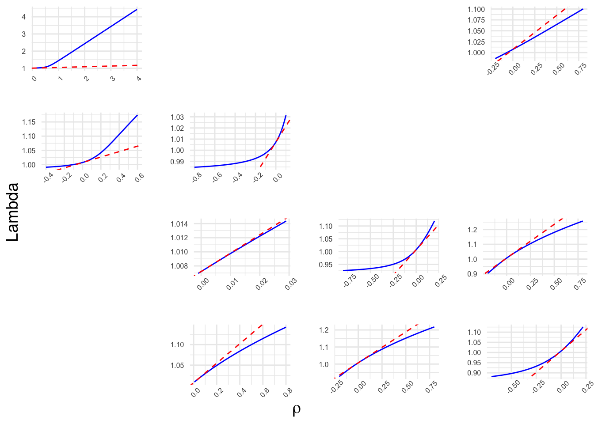
La misma figura, pero con mucho menos trabajo. Este script es lo preferido para evaluar la elasticidad no lineal de las funciones de transferencia. Aunque en esta figura no se demuestra el efecto de la sensibilidad, es posible agregarlo con la función abline como se hizo en los ejemplos anteriores.
tfmat=tfam_lambda(Lr1)
plot(tfmat)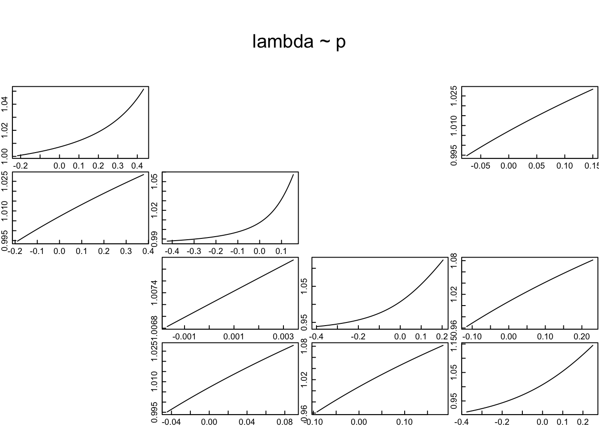
El siguiente gráfico muestra la inercia de la población de L. rubripetala en el ciclo de vida. La definición de inercia ….
#Definir márgenes
par(mfrow = c(4,4))
par(mfg = c(1,1))
#Gráficas de la función de transferencia de la inercia en el ciclo de vida de L. rubripetala (población 1)
tfmatriz <- tfam_inertia(Lr1,vector = nLr0)
plot(tfmatriz, xlab="Lambda", ylab="Inercia", cex.axis=1.4, cex.lab=1.5)
Este sección esta como fuera se sitio…
Aquí seria bueno mencionar algunos de los trabajos que usar este metodo y decir los que se observo y interpreto.
Raventós y colaboradores (Raventós et al., 2015) (2015) estimaron el crecimiento poblacional de corto plazo de dos orquídeas epífitas después del paso de un huracán. Dado que a su paso se pierden individuos, se simuló si la re-entroducción de plántulas y adultos mitigaban los efectos de este fenómeno en Cuba. Los resultados sugieren que la re-introducción de adultos tiene un efecto positivo sobre
Revisión:
RLT 2025-06-03